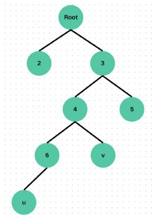

LCA
最近公共祖先 Least Common Ancestor 是指在有根上树上两个点沿着祖先链向上第一次相遇的位置。
如下图，u 和 v 的最近公共祖先是节点 4 而不是节点 3，虽然节点 3 确实是 u 和 v 的祖先，但是不是最近的。

暴力法
如果要求 u 和 v 的 LCA 那么那个 LCA 一定同时出现在 u 到根节点的路径和 v 到根节点路径上，而且是第一个同时出现的位置。为了方便，思路就是先将 u 和 v 向上走到同一层，在一步一步向上移动，直到 u 和 v 相遇，这个相遇的点就一定是 u 和 v 的 LCA。
想要让 u 和 v 跳到同一层，得先知道 u 和 v 是那一层。\(dep[u]\) 表示节点 u 离根的距离（也就是深度）。然后需要处理一个 \(fa[u]\) 数组代表 u 的父亲的节点编号。
接下来就到了写 LCA 函数的时候了，第一步是将 u 和 v 一步一步挪到同一层。然后第二部是一起向上挪，直到挪到同一个点上。
时间复杂度
暴力法需要预处理整棵树，所以复杂度为 \(\varTheta(n)\) ，而单次查询的复杂度为 \(\varTheta(n)\)，因为如果树长成一条连，u 和 v 在两段求的时候需要一步一步向另一个节点挪，这样就是树的大小 \(n\) 所以单次查询时间复杂度是 \(\varTheta(n)\)，有些慢。
倍增法
倍增法是暴力法改良而来，优化了一步一步向上挪，变成了倍增式向上挪，同时挪到时候也是使用了倍增的思想。
使用倍增方法我们需要将之前 \(fa[u]\) 数组多加一维变成 \(fa[u][i]\)，表示 u 的 \(2^{i}\) 辈祖先的节点编号，这可以帮助我们优化代码。
初始化的改变
在初始化 \(fa\) 数组时会用到一个 for 循环长下面这个样子：
\(fa[u][0] = f\) 这很容易理解就是初始化 u 的父亲。但是这个 for 循环是什么意思呢？观察发现 \(fa[u][i - 1]\) 是 u 向上的第 \(2^{i - 1}\) 辈的节点编号，而 \(fa[fa[u][i - 1]][i - 1]\) 表示的是 u 向上第 \(2^{i - 1}\) 的祖先编号的第 \(2^{i - 1}\) 辈祖先的编号。而 \(2^{i} = 2^{i - 1} + 2^{i - 1}\) ，所以初始化为 \(fa[fa[u][i - 1]][i - 1]\) 。（这虽然有些绕，但是确实是这样的……）
LCA 函数的改变
在 LCA 函数里主要有两处改变，第一处是在 u 自己向上一步一步变成跳， 这将变成这个样子：
这个其实很好理解，就是判断如果 u 向上跳 \(2^{i}\) 辈的深度还是比 v 深或者相同，那么就跳。换句话说就是只要跳完之后的深度不超过 v 就可以跳。第二处改变是在 u 和 v 同深度时，一起向上走变成一起向上跳，这将变成这个样子：
if 判别式里就是如果那两个相同，返回 false，否则返回 true。
那么这个 for 循环意思就是将 u 和 v 都跳到还有一步就相遇的地方，答案就是 \(fa[u][0]\) 或者 \(fa[v][0]\) ，所以最后一行返回的是 \(fa[u][0]\) （其实 \(fa[v][0]\) 也可以）。
时间复杂度
使用了倍增思想的 LCA 时间复杂度变快，由于预处理变成了 \(\varTheta(n \ log \ n)\)，单次查询的时间复杂度降到了 \(\varTheta(log \ n)\)。
个人感悟
LCA 这个算法适用于求出树上两点之间的距离，也可以找到两个点在树上的最近公共祖先。这个算法可以搭配 DFS 一起使用。也有一些操作需要 LCA ，比如树上前缀和和树上差分。
总体而言， LCA 是一个可以让我们快速求出两个点的最近公共祖先的一个算法，也是让我们快速求出树上两个点的最短距离的方法。